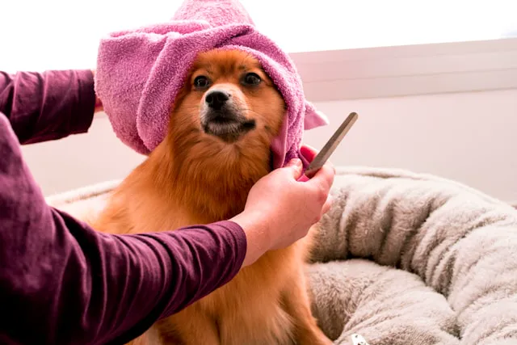

Identifica el tipo de manto y su cepillado correcto
El primer paso para un mantenimiento exitoso es reconocer las características del pelo de tu perro, ya que cada uno necesita su herramienta: los de pelo liso y largo como el Yorkshire requieren peines firmes, mientras que para los crespos como el Poodle o barbudos como el Schnauzer, lo ideal es una carda que ayude a estirar el pelo y sacar nudos. Los perros de pelo corto suelen requerir un cepillado semanal para eliminar células muertas, mientras que las razas de pelo largo o rizado demandan una frecuencia diaria para evitar la formación de nudos que pueden lastimar la piel. Realiza siempre movimientos suaves en la dirección del crecimiento del pelo, empezando por la cabeza y prestando especial atención a zonas sensibles como el abdomen y las patas. Este hábito no solo mejora la circulación sanguínea y el metabolismo cutáneo, sino que también fortalece el vínculo afectivo con tu mascota, transformando el aseo en una rutina placentera y relajante.
"El pelaje de tu perro es el espejo de su salud: un manto brillante y libre de nudos es el resultado directo de una buena nutrición y una rutina de aseo constante."
La higiene y el baño: frecuencia y productos
La frecuencia del baño es relativa y debe adaptarse a la densidad y longitud del pelaje. Generalmente, se recomienda un intervalo de entre tres semanas y dos meses. Un error común es bañar al perro con demasiada frecuencia, lo que puede eliminar los aceites naturales que protegen su piel. Es fundamental utilizar champús y acondicionadores formulados específicamente para mascotas, ya que su pH es distinto al humano. Antes de iniciar el baño, asegúrate de realizar un cepillado previo para eliminar enredos, ya que el agua tiende a apretar los nudos, haciéndolos casi imposibles de quitar después. Además del cuerpo, no olvides la higiene diaria de zonas críticas: limpia el hocico tras las comidas y usa algodones húmedos para retirar la suciedad alrededor de los ojos y oídos, previniendo así posibles infecciones bacterianas u oculares.

Nutrición: el secreto de un brillo duradero
Aunque el cuidado externo es vital, la verdadera belleza del pelaje nace en el plato de comida. La queratina, proteína esencial para la estructura capilar, y los ácidos grasos como el Omega-3 y Omega-6 son componentes que el perro no siempre produce por sí mismo y debe obtener de su dieta. Una alimentación de alta calidad, libre de colorantes y rica en minerales y vitaminas, garantiza raíces fuertes y un brillo natural (Consulta nuestro artículo ¿Cuántas veces al día debe comer un perro según su edad?). Si notas que tu perro pierde pelo en exceso fuera de las épocas de muda o que su manto luce marchito a pesar de tus cuidados, consulta con tu veterinario sobre posibles suplementos o cambios en su dieta. Recuerda que un perro bien alimentado no solo se siente mejor, sino que lo demuestra a través de un pelaje suave, terso y lleno de vida.
Conclusiones
- El cepillado frecuente ayuda no sólo a cuidar el pelaje, sino que mejora el vínculo con tu mascota.
- Usar herramientas específicas según el tipo de pelo ayuda a evitar irritaciones.
- La salud del manto es una combinación de higiene externa con una dieta equilibrada.
¿Encuentras útil el artículo?
Compártelo con alguien más